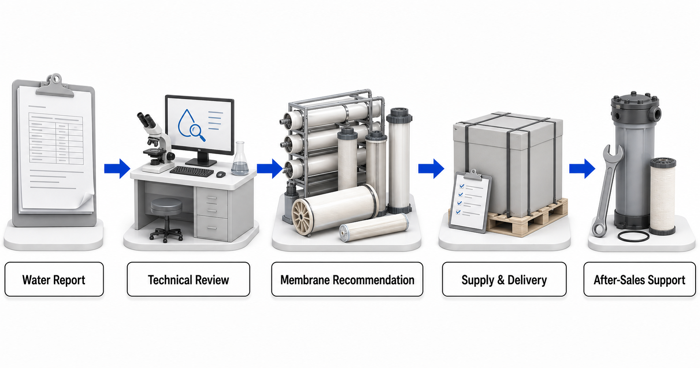

Thẩm thấu ngược (RO)
RO được xem xét khi cần giảm nhiều loại muối hòa tan hoặc tạo nước thành phẩm có độ tinh khiết cao hơn. Thành phần hóa học của nước cấp, áp suất, tiền xử lý và điều kiện của dòng cô đặc xác định giới hạn ứng dụng thực tế.
Yuchen Water là nhà phân phối và đại lý màng Vontron. Chúng tôi cung cấp vật liệu màng cho các dự án dân dụng, thương mại và công nghiệp, đồng thời cung cấp hỗ trợ kỹ thuật thiết bị liên quan. Trung tâm này giải thích các loại màng và ứng dụng mà không yêu cầu bên mua chọn một model sản phẩm. Trước tiên cần có báo cáo hiện hành về nước hoặc lưu chất quy trình, mục tiêu xử lý và bản mô tả yêu cầu vận hành.

Các nhóm màng mô tả vai trò phân tách. Chúng không thay thế báo cáo phân tích nước hoặc đề xuất vật liệu cuối cùng.
RO được xem xét khi cần giảm nhiều loại muối hòa tan hoặc tạo nước thành phẩm có độ tinh khiết cao hơn. Thành phần hóa học của nước cấp, áp suất, tiền xử lý và điều kiện của dòng cô đặc xác định giới hạn ứng dụng thực tế.
NF có thể hỗ trợ phân tách có chọn lọc các chất hòa tan và chất hữu cơ. Cần nêu rõ các chất mục tiêu cần giữ lại và cho đi qua màng, pH, nhiệt độ và điều kiện làm sạch.
Vai trò của UF và MBR thường tập trung vào các chất lơ lửng, chất keo và vật chất sinh học. Chúng có thể đóng vai trò lớp ngăn giữ cuối cùng hoặc bước tiền xử lý trước các công đoạn màng có khả năng phân tách tinh hơn.
Các ứng dụng xử lý nước biển và nước lợ đòi hỏi phải xem xét độ mặn, ion, nhiệt độ, hệ thống lấy nước đầu vào, tiền xử lý và thiết bị áp suất cao trước khi lựa chọn vật liệu.
Bắt đầu từ nguồn đầu vào và mục đích sử dụng. Mỗi hướng ứng dụng đều dẫn đến một danh sách kiểm tra thông tin báo cáo và một cuộc trao đổi kỹ thuật, chứ không dẫn đến việc tự động chọn model màng.
Xem xét độ mặn, ion, nhiệt độ, mức độ biến động của nước lấy vào, nguy cơ sinh học, yêu cầu đối với nước thấm qua màng và các hạn chế đối với dòng cô đặc.
Kiểm tra độ cứng, độ kiềm, silica, sắt, mangan, khí, độ mặn và các chất ô nhiễm có liên quan tại địa phương.
Xác nhận các chất khử trùng, chất hữu cơ, độ cứng, mục tiêu về vị của nước, sản lượng yêu cầu và mục đích sử dụng ở công đoạn sau.
Mô tả quy trình phát sinh nước thải, mức độ biến động, chất hữu cơ, dầu, kim loại, chất rắn, mục đích tái sử dụng và cách xử lý dòng cô đặc.
Cung cấp cân bằng ion đầy đủ, các nguy cơ đóng cặn nhỏ, chất hữu cơ, mức độ biến động và vai trò dự kiến của công đoạn màng.
Nêu rõ thành phần đầy đủ và mục tiêu phân tách. Hỗ trợ về vật liệu màng không phải là lời cam kết về một quy trình chiết tách hoàn chỉnh hoặc kết quả thu hồi.
Xác định các thành phần cần giữ lại, mục tiêu chất lượng sản phẩm, yêu cầu vệ sinh, pH, nhiệt độ, điều kiện làm sạch và yêu cầu về bằng chứng.
Lựa chọn dựa trên sự phù hợp với nước đầu vào, nhu cầu, áp suất, cấu hình máy lọc nước, tiền xử lý và khả năng tiếp cận để thay thế, thay vì dựa vào công suất ghi trên nhãn.
Nội dung trên website cung cấp kiến thức kỹ thuật ở cấp độ nhóm màng. Cần có báo cáo đầy đủ và bản mô tả yêu cầu vận hành đã được xác nhận trước khi đưa ra quyết định cuối cùng về vật liệu, thiết bị hoặc hiệu suất. Yuchen Water không tuyên bố mình sản xuất màng Vontron và không cam kết về thông lượng, tỷ lệ thu hồi, tuổi thọ, độ chọn lọc hoặc kết quả dự án đối với dòng chất lỏng chưa được đánh giá.
Tìm hiểu cách thành phần hóa học của nước cấp, mục tiêu xử lý và điều kiện vận hành định hướng việc lựa chọn giữa các loại màng RO, NF và UF.
Đọc hướng dẫn →Tìm hiểu dữ liệu trong báo cáo và những vấn đề về tiền xử lý, thiết bị cần xem xét trước khi đưa ra khuyến nghị về màng cho nước biển hoặc nước lợ.
Đọc hướng dẫn →Lập kế hoạch xử lý nước ngầm và nước giếng bằng màng dựa trên phân tích đầy đủ về khoáng chất, kim loại, khí, chất hữu cơ và mục tiêu vận hành.
Đọc hướng dẫn →Tìm hiểu cách lịch sử dòng nước thải, mục tiêu tái sử dụng và rủi ro trong tiền xử lý xác định vai trò của UF, NF và RO trong một dự án tái sử dụng nước thải công nghiệp.
Đọc hướng dẫn →Chuẩn bị thông tin cần thiết về thành phần hóa học, mức độ biến động và mục tiêu quy trình trước khi trao đổi về vật liệu màng cho nước thải có độ mặn cao hoặc hỗ trợ liên quan đến ZLD.
Đọc hướng dẫn →Tìm hiểu những dữ liệu về thành phần và mục tiêu quy trình cần có trước khi trao đổi về vật liệu màng NF, RO hoặc UF cho nước muối hồ mặn và lưu chất liên quan đến lithium.
Đọc hướng dẫn →Lựa chọn vật liệu màng RO cho ứng dụng dân dụng và thương mại quy mô nhỏ dựa trên chất lượng nước, nhu cầu hằng ngày, khả năng tương thích thiết bị và điều kiện sử dụng, thay vì nhãn model.
Đọc hướng dẫn →Tìm hiểu cách than hoạt tính có thể hỗ trợ kiểm soát chất oxy hóa và chất hữu cơ trước RO, cùng lý do việc lựa chọn than vẫn phụ thuộc vào phân tích nước và điều kiện hệ thống.
Đọc hướng dẫn →Tìm hiểu ý nghĩa của thiết kế chống bám bẩn có độ sụt áp thấp của Vontron PURO-ULD, cách đọc các điều kiện thử nghiệm được công bố và vai trò của màng này trong việc đánh giá hệ thống RO công nghiệp.
Đọc hướng dẫn →Tìm hiểu cách than hoạt tính có thể hỗ trợ kiểm soát chất oxy hóa và chất hữu cơ trước RO, cùng lý do việc lựa chọn than vẫn phụ thuộc vào phân tích nước và điều kiện hệ thống.
Đọc hướng dẫn →Liên kết chính thức được cung cấp làm nguồn tham khảo sơ cấp về các loại màng và tài liệu hiện hành. Thông tin sản phẩm có thể thay đổi, vì vậy vật liệu cụ thể và tài liệu chính thức hiện hành được xác nhận trong quá trình đánh giá kỹ thuật. Tổng quan chính thức của Vontron về màng công nghiệp · Tổng quan chính thức của Vontron về màng UF
Vì tên nguồn nước và TDS không mô tả đầy đủ mọi rủi ro về cáu cặn, bám bẩn, khả năng tương thích và mục tiêu xử lý.
Không. Trung tâm giúp bên mua chuẩn bị đúng thông tin; khuyến nghị cuối cùng được đưa ra sau khi xem xét báo cáo và điều kiện vận hành.
Có. Sản phẩm cung cấp chính là vật liệu màng, kèm hỗ trợ liên quan đến tiền xử lý, vỏ màng, bơm, lọc, hệ thống điều khiển, hướng dẫn chạy thử đưa vào vận hành và lập kế hoạch thay thế.